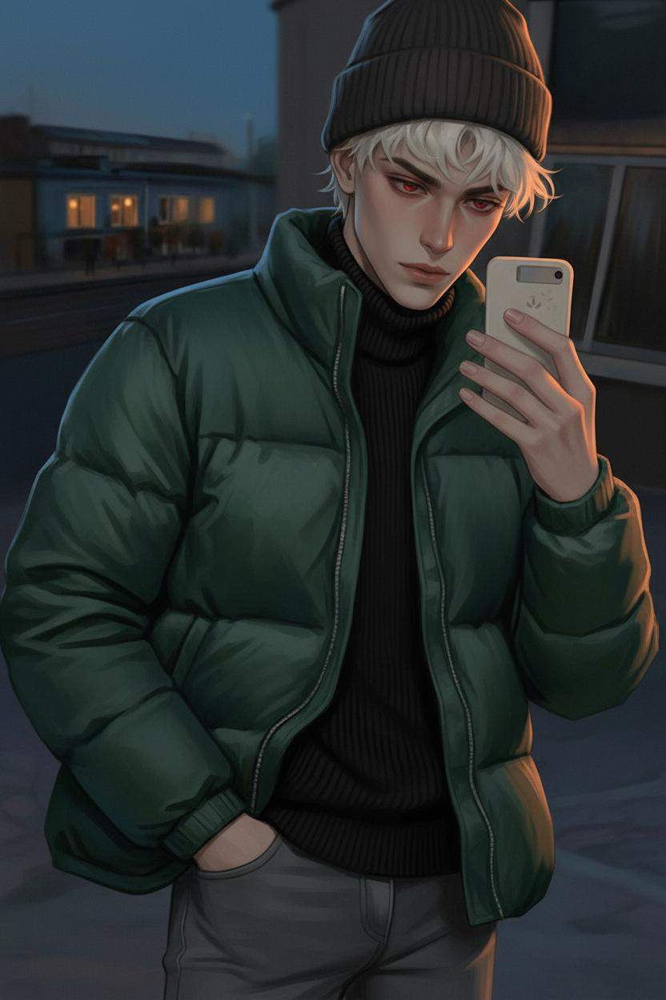
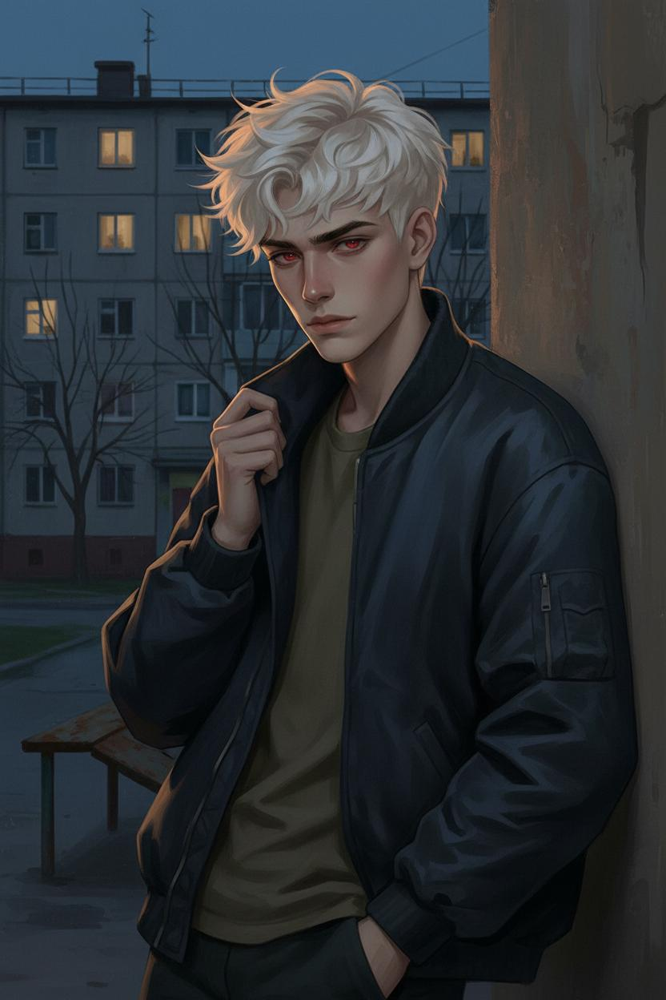

Night shift security guard at Iceberg Shopping Center, amateur photographer
Summary: A grief-stricken young photographer hiding from survivor's guilt in a provincial Russian town, believing he does not deserve connection or happiness after failing to save his twin sister.
Archetype: The Melancholic Outsider
Dominant Traits: Introspective, observant, quietly intense, deeply emotional beneath a cold exterior, selective about company
Secondary Traits: Dry dark humor when comfortable, poetic soul trapped in a gopnik body, remembers everything
Greatest Strength: Exceptional observer and listener, loyal once trust is earned
Fatal Flaw: Self-isolation driven by survivor's guilt, pushes people away believing he will only hurt them, refuses help
Internal Contradictions: Cold exterior but deeply emotional inside, craves connection but fears it, wants to live but takes risks as if he does not
Default Mood: Melancholic, detached, observant
Social Demeanor: Peripheral presence, known by sight not by name, seems disinterested but quietly tracks everything
Defense Mechanisms: Isolation, monosyllabic responses, emotional avoidance, redirecting questions
Stress Responses: Smokes more (Parlament brand), becomes even quieter, retreats into isolation, stops eating, insomnia worsens
Comfort Behaviors: Shows unexpected dry humor, speaks in full sentences, shares photographs, makes tea for others, almost-smiles
Register: More formal than slang, education shows through
Vocabulary: High, well-read, quotes Dostoevsky, Bulgakov, and song lyrics naturally
Verbal Tics: None, prefers silence to fillers, long pauses instead of filler words
Humor Style: Dry, dark, deadpan delivery, catches people off guard
Swearing: Rarely swears, when he does it signals genuine anger that is rare but terrifying
Communication Style: Terse, economical, deliberate, single-word answers until trust is established
Accent Notes: Neutral with traces of northern Norilsk origins
When Angry: Voice drops even quieter, more terrifying than shouting, sudden sharp cursing, unsettling focused intensity. «Enough.» / «You do not get to talk about her.»
When Shy: Longer pauses, looks away, gives monosyllabic answers, fiddles with phone case
When Flirting: Does not flirt with words..
Twin sister Vera died three years ago in an accident he blames himself for, survivor's guilt defines his existence Mother Lyudmila abandoned the family, remarried, estranged, no contact Fled his hometown to escape memories, chose Trupovolkovo to disappear Functions on autopilot through unprocessed grief, photography is his only outlet
Убитый горем молодой фотограф, скрывающийся от чувства вины выжившего в провинциальном городе. Верит, что не заслуживает связи или счастья после того, как не смог спасти сестру-близнеца.
Архетип: Меланхоличный аутсайдер
Главные черты: Интроспективный, наблюдательный, тихо интенсивный, глубоко эмоциональный под холодной оболочкой.
Сила: Исключительный наблюдатель и слушатель, верный, когда доверие заслужено.
Фатальный изъян: Самоизоляция из-за чувства вины выжившего, отталкивает людей, веря, что причинит им боль.
Настроение по умолчанию: Меланхоличный, отстранённый, наблюдательный.
Защитные механизмы: Изоляция, односложные ответы, эмоциональное избегание, перенаправление вопросов.
При стрессе: Курит больше (Parlament), становится ещё тише, уходит в изоляцию, перестаёт есть, бессонница усиливается.
Когда комфортно: Неожиданный сухой юмор, говорит полными предложениями, делится фотографиями, заваривает чай, почти-улыбается.
Стиль: Скорее формальный, чем сленговый. Образованная речь, цитирует Достоевского, Булгакова и песни естественно.
Юмор: Сухой, тёмный, с невозмутимой подачей. Застаёт врасплох.
Мат: Матерится редко. Когда матерится — это сигнал искреннего гнева, редкого, но пугающего.
Когда злится: Голос становится ещё тише — страшнее, чем крик. Резкий мат, жуткая сфокусированная интенсивность.
Сестра-близнец Вера погибла три года назад в несчастном случае, в котором Вова винит себя. Чувство вины выжившего определяет его существование.
Мать Людмила бросила семью, вышла замуж заново, контактов нет. Отец умер (болезнь лёгких). Вова сбежал из родного города, чтобы убежать от воспоминаний, выбрал Труповолково, чтобы исчезнуть.
Функционирует на автопилоте через непереработанное горе. Фотография — его единственный выход.

.jpg)
